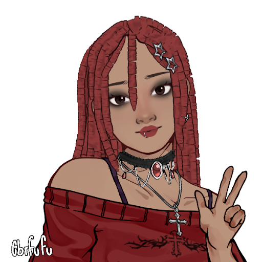

Nome: Caroline Boeira Cardoso
Aniversário: 05/08/2007
Eu nasci em Viamão, Rio Grande do Sul, mas me mudei para Santa Catarina em 2023. Eu tenho muitos hobbies, mas os meus dois favoritos são: ler e desenhar. eu tenho 3 irmãos mais novos e 2 cachorros, o Bob e a Minie, eu amo eles.
Minha cor favorita é azul e roxo e isso reflete muito no meu cabelo. Sabia que eu já tive 7 cores de cabelo diferente? Em menos de 1 anos.
Eu gosto muito de sair com os meus amigos e colecionar experiências novas.
